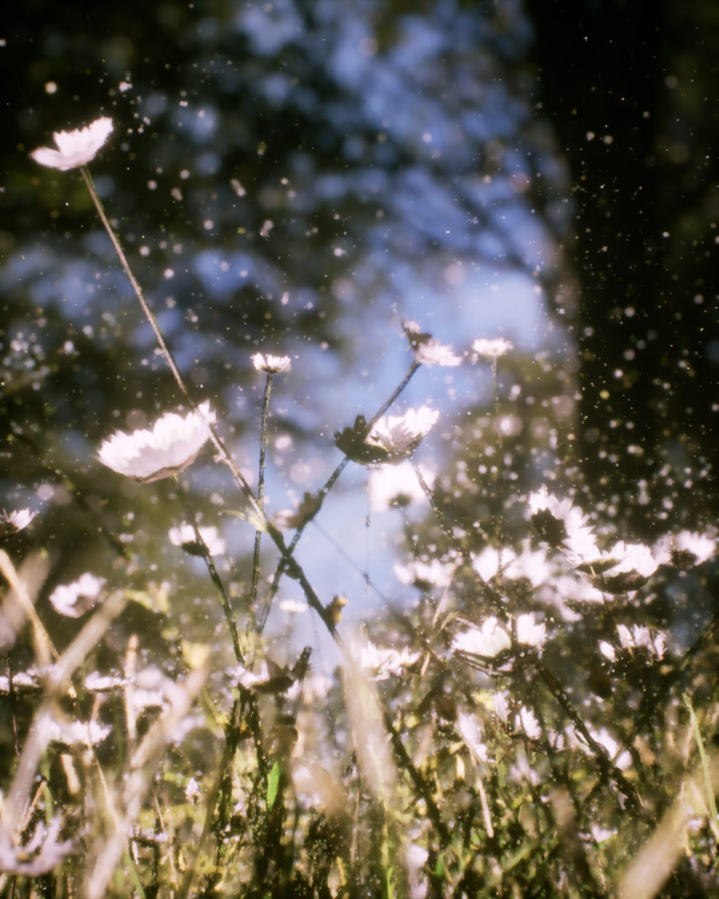
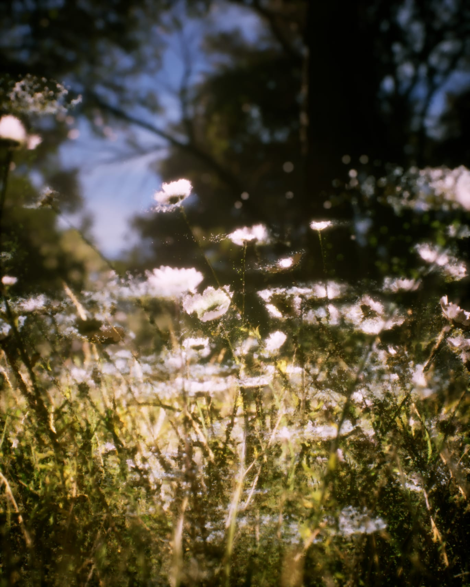
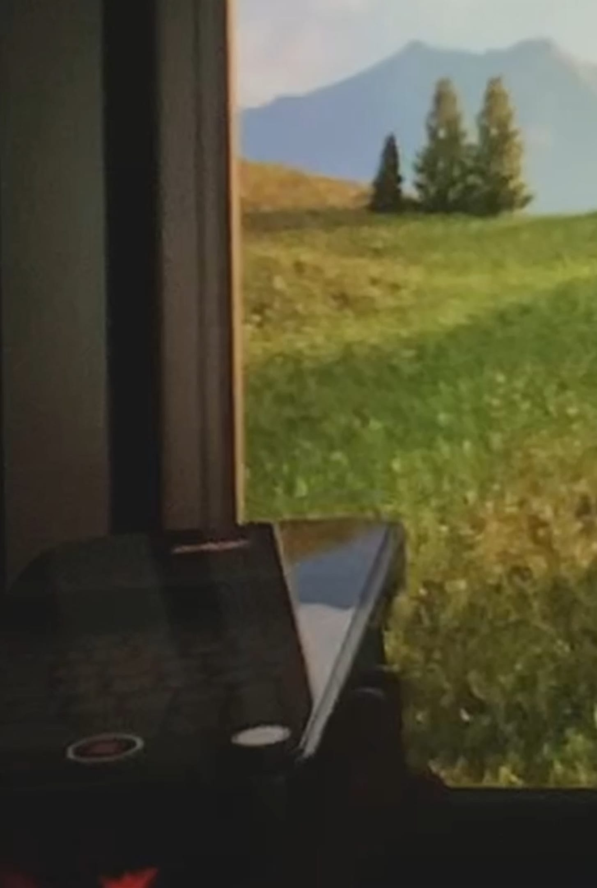

본문으로 이동
3Dowon
Menu
3Dowon
EN
3Dowon
About
Works
All
Interactive
Physical Computing
Exhibition
Web
Video
VR/AR
Lab
Portfolio
CV
Instagram
YouTube
GitHub
Naver Blog
EN


Shipping Time
날짜
2024
유형
인터랙티브
제작
개인
You might also like
Aspect Ratio
/ Installation, Interactive / 2024

At the moment
/ Interactive / 2024
Botanic Brush
/ Interactive, Web / 2024
Dear Actor
/ Interactive / 2024
작업 보기 ↗
닫기 ×